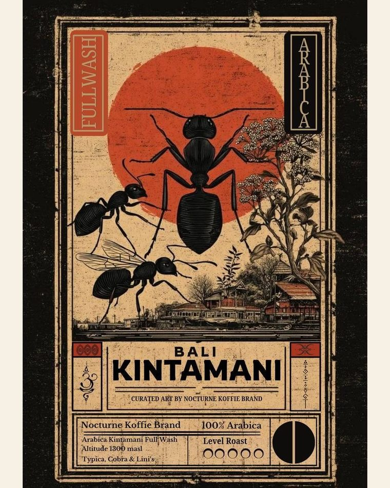
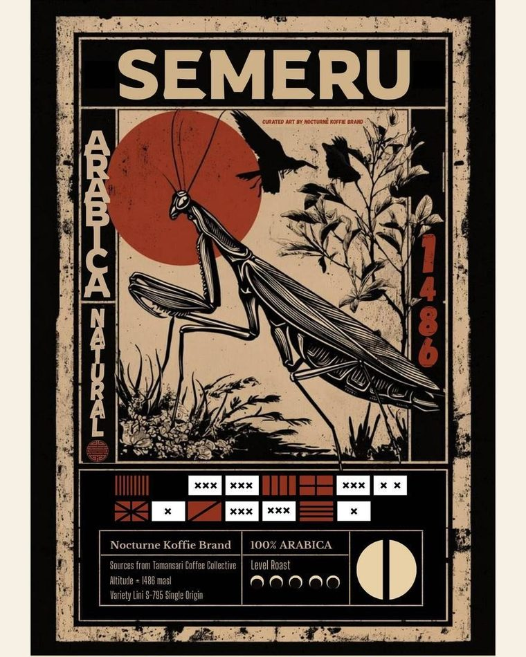
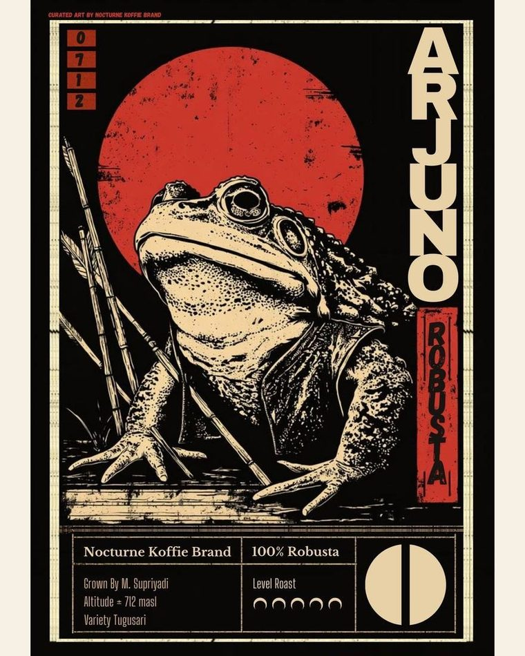
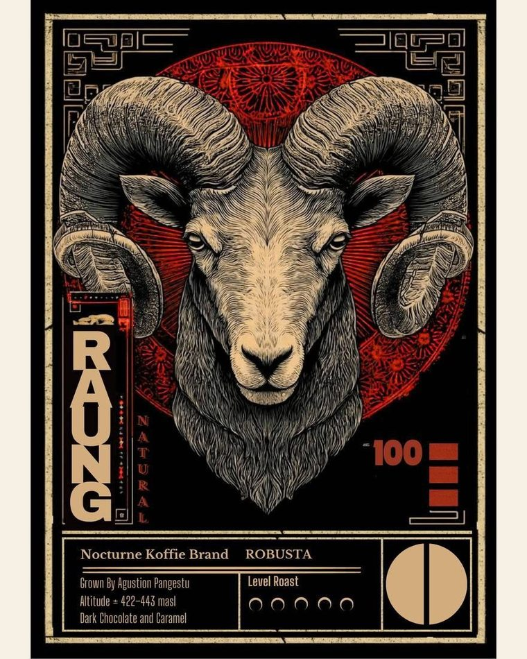
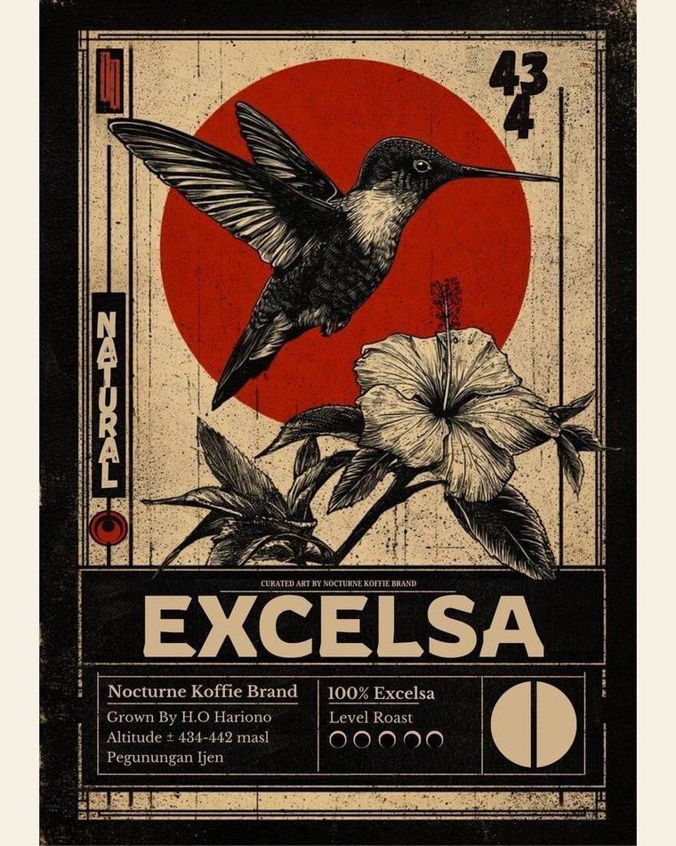
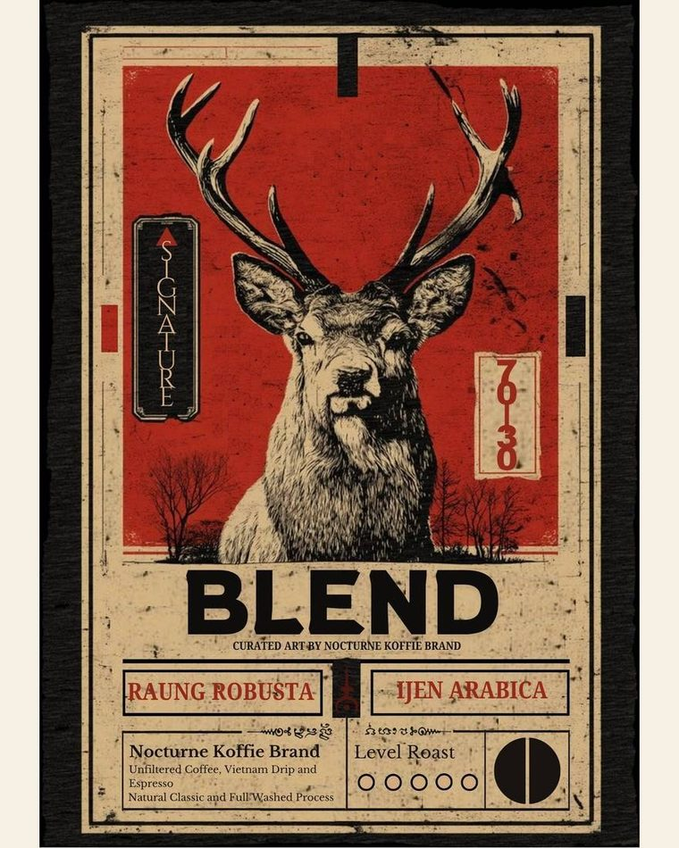
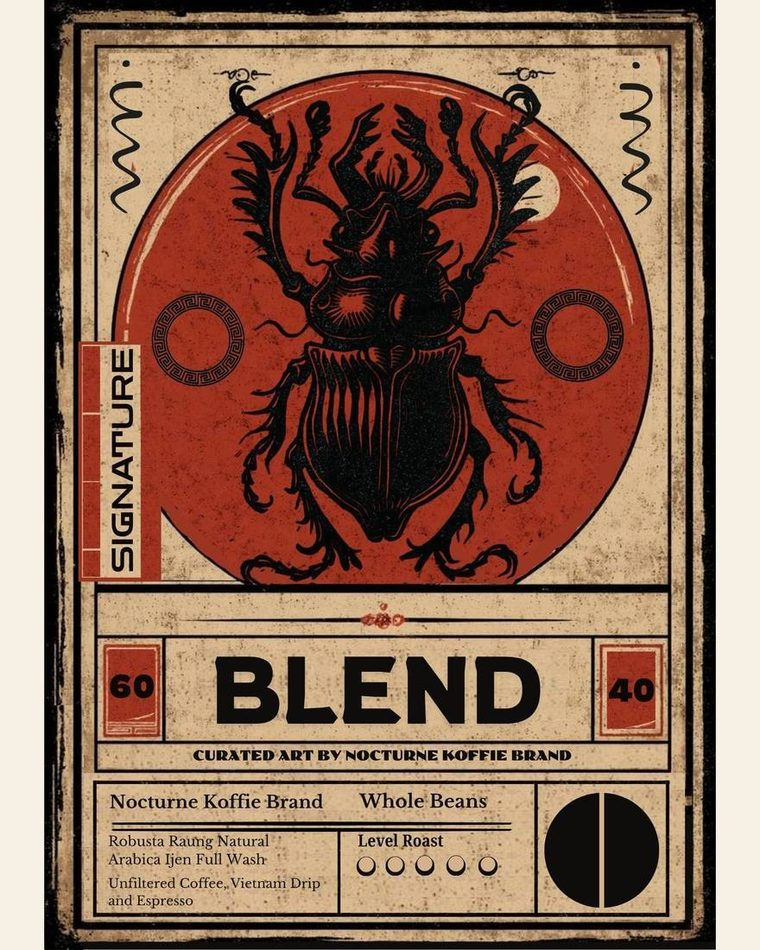

Roasted beans · Banyuwangi, Jawa Timur
Nocturne Koffie
9 biji kopi sangrai, nama petani tercetak di kemasan. Disangrai mingguan oleh Ais Coffee Roastery di Banyuwangi, lalu dikemas dan dikirim dari kota yang sama.









Tentang
Setiap kemasan menyebut nama petani, desa, dan ketinggian kebunnya . Disangrai mingguan oleh Ais Coffee Roastery di Banyuwangi . Dikemas dan dikirim dari kota yang sama. .
Yang kami jualBiji sangrai, bukan janji. Tiap kemasan punya tanggal sangrai, kode batch, dan nama petani yang bisa Anda cek.
Yang kami jagaJadwal sangrai mingguan supaya yang sampai ke Anda masih segar, dan racikan yang sama tiap kali dipesan ulang.
Yang kami tidak klaimKami bukan penyangrai. Penyangraian dikerjakan Ais Coffee Roastery; kami yang memilih lot, menentukan level, mengemas, dan mengirim.
Yang dikirim
Empat ukuran,
lima cara
menikmati.
Semua tersedia sekarang. Pilih biji dan ukuran; sisanya kami urus sampai di depan pintu.
Dari pesan
ke cangkir
Empat langkah · tanpa antre panjang
-
Pesan
Sebutkan biji, ukuran (100 g / 250 g / 500 g / 1 kg), dan giling: biji utuh, V60-filter, tubruk, atau espresso. Lewat WhatsApp cukup satu pesan.
-
Sangrai
Penyangraian dikerjakan Ais Coffee Roastery di Banyuwangi pada jadwal mingguan. Tiap batch punya catatan sendiri — bukan disangrai jauh hari lalu disimpan lama.
-
Kemas
Label menyebut nama petani, daerah, ketinggian, level sangrai, tanggal sangrai, dan kode batch. Yang Anda butuhkan untuk memeriksa, bukan hiasan.
-
Kirim
Dikemas dan dikirim dari Banyuwangi. Bisa juga diambil langsung di kota. Nomor resi dan tanggal sangrai dikirim menyusul di chat yang sama.
Biji & harga
9 SKU · harga bersumber dari katalog
| No | Biji | Daerah | Proses | Catatan rasa | Mulai | Pesan |
|---|---|---|---|---|---|---|
| 01 | Gayo Arabika · level 3/5 | Aceh 1.346 mdpl |
Natural Classic | Cokelat, Rempah, Jeruk | Rp45.000100g – 1kg | Pesan |
| 02 | Kintamani Arabika · level 2/5 | Kintamani, Bali 1.300 mdpl |
Full Wash | Jeruk, Bunga, Teh hitam | Rp40.000100g – 1kg | Pesan |
| 03 | Blue Mount Ijen Arabika · level 2/5 | Pegunungan Ijen, Banyuwangi 1.700–1.800 mdpl |
Full Wash | Madu, Apel, Melati | Rp39.000100g – 1kg | Pesan |
| 04 | Semeru Arabika · level 1/5 | Malang 1.486 mdpl |
Natural Classic | Jeruk manis, Gula merah, Teh | Rp36.000100g – 1kg | Pesan |
| 05 | Arjuno Robusta · level 4/5 | Malang 712 mdpl |
Natural | Kacang, Cokelat, Tembakau | Rp25.000100g – 1kg | Pesan |
| 06 | Raung Robusta · level 5/5 | Kec. Kalibaru, Banyuwangi 422–443 mdpl |
Natural | Cokelat hitam, Karamel | Rp23.000100g – 1kg | Pesan |
| 07 | Ijen Excelsa Excelsa · level 3/5 | Kec. Kalipuro, Banyuwangi 434–442 mdpl |
Natural | Berry, Gula aren, Kayu manis | Rp26.000100g – 1kg | Pesan |
| 08 | Blend 70/30 Blend · level 4/5 | Banyuwangi — |
Natural · Full Wash | Cokelat, Karamel, Kacang | Rp30.000100g – 1kg | Pesan |
| 09 | Blend 60/40 Blend · level 3/5 | Banyuwangi — |
Natural · Full Wash | Cokelat susu, Jeruk, Rempah | Rp33.000100g – 1kg | Pesan |
Harga di atas untuk 100 g. Ukuran 250 g, 500 g, dan 1 kg punya harga sendiri — klik pesan untuk daftar lengkapnya. Semua 9 biji berstatus tersedia saat halaman ini dibuat. Level sangrai tercatat 1–5; level 3 berarti medium.
Angkanya
Dihitung dari katalog, bukan dari perasaan
Tidak ada angka pembanding industri di halaman ini. Yang tertulis hanya isi katalog: jumlah biji, ukuran, level sangrai, dan harga terendah.
Catatan rasa
Dari 9 kemasan · geser untuk berikutnya
cokelat, rempah dan jeruk.
jeruk, bunga dan teh hitam.
madu, apel dan melati.
jeruk manis, gula merah dan teh.
kacang, cokelat dan tembakau.
cokelat hitam dan karamel.
berry, gula aren dan kayu manis.
cokelat, karamel dan kacang.
cokelat susu, jeruk dan rempah.
Ayo mulai
Pilih biji.
Kami sangrai.
Sebut satu biji dan satu ukuran. Kami balas dengan stok, tanggal sangrai terakhir, dan ongkir ke alamat Anda.